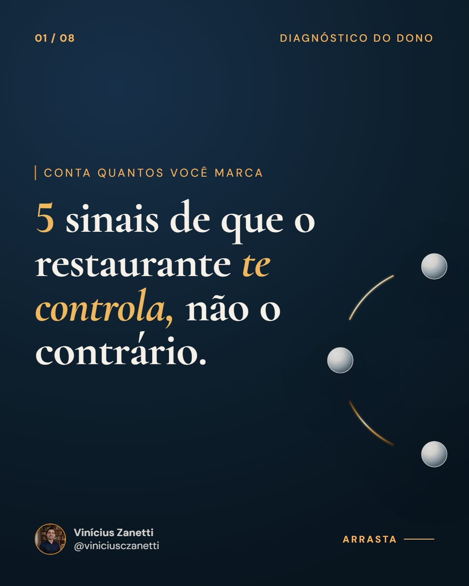

5 sinais de que o seu restaurante depende do dono (e o que fazer com cada um)
O dono que trabalha o dia inteiro e não tira férias costuma achar que é dedicação. Na maioria das vezes é falta de estrutura. Veja como reconhecer o problema e por onde começar.
Publicado em 16/11/2026
Ele abre a loja, confere a entrega do fornecedor, monta lanche no pico, fecha o caixa e ainda responde mensagem da equipe depois da meia-noite. O restaurante vende, o salão enche, e mesmo assim o dono não consegue ficar um dia fora. Para o consultor Vinícius Zanetti, esse retrato não é sinal de sucesso. É sinal de que o negócio inteiro está apoiado em uma pessoa só.
Num carrossel publicado no Instagram, ele listou cinco sinais de que o restaurante controla o dono, e não o contrário. A proposta é simples: o leitor passa pelos cinco e conta quantos marcou.

Quais são os sinais de que o restaurante depende do dono?
Os cinco sinais do carrossel são situações do dia a dia, sem conta nenhuma. Justamente por isso passam despercebidos: o dono se acostuma com eles e passa a achar que fazem parte do trabalho.
- Você é o único que sabe onde fica tudo. A senha do fornecedor, o lugar do estoque reserva, o jeito de ligar o forno. Nada disso está escrito.
- Se você falta, o caixa fecha. Ninguém mais tem autorização, conhecimento ou confiança para fechar o dia.
- Seus funcionários perguntam tudo para você. Da troca de um ingrediente ao desconto para um cliente, cada decisão sobe até o dono.
- Você não tira férias há mais de um ano. Não por falta de vontade, mas porque o restaurante não para de pé sem você.
- Você não sabe o seu lucro real do mês passado. Sabe quanto vendeu, mas não sabe quanto sobrou.
A régua do carrossel é direta: três sinais ou mais indicam que o problema não está no esforço do dono.
"Se você se identificou com 3 ou mais, você não tem um restaurante. Você tem um emprego disfarçado de negócio."Vinícius Zanetti, no carrossel sobre os 5 sinais de que o restaurante controla o dono
Por que trabalhar mais não resolve?
Porque o gargalo é o próprio dono. Cada hora a mais que ele coloca na operação reforça o modelo em que tudo passa por ele. A equipe aprende que, na dúvida, é só perguntar. O conhecimento continua na cabeça de uma pessoa. E o restaurante cresce até o limite do que essa pessoa consegue carregar.
Na legenda do carrossel, Vinícius resume a diferença entre esforço e estrutura:
"Se foram 3 ou mais, o problema não é falta de esforço, é falta de estrutura."Vinícius Zanetti, no carrossel sobre os 5 sinais de que o restaurante controla o dono
No livro Restaurante no Controle, a dependência total do dono aparece entre os cinco problemas mais recorrentes que ele encontrou atendendo bares e restaurantes. O texto descreve o quadro com exemplos que muitos donos reconhecem: o restaurante só abre porque o dono está lá, o pedido especial só é aceito se ele autorizar, o conflito na equipe só se resolve quando ele aparece.
"Esse modelo não é gestão. É sobrevivência."Vinícius Zanetti, no livro Restaurante no Controle, na introdução
Por que não saber o lucro é o sinal mais perigoso?
Os quatro primeiros sinais cansam o dono. O quinto pode quebrar o negócio. Restaurante cheio dá a sensação de que tudo vai bem, mas movimento não é lucro. O livro lembra que é possível ter fila na porta e terminar o mês no vermelho, e que é possível trabalhar 14 horas por dia sem saber, no fim do mês, se o negócio deu lucro.
Saber o lucro real exige separar as contas na ordem certa. No método que o Vinícius aplica, a DRE gerencial parte do faturamento bruto, tira impostos, taxas de cartão e de delivery, depois o CMV, chega à margem de contribuição e, descontados os custos fixos, ao resultado do mês. A matéria DRE gerencial de restaurante mostra a estrutura linha por linha, e Vende todo dia e não sabe se dá lucro? mostra por onde começar quando o dono nunca fez essa conta.
Sem essa conta, o dono decide no escuro: contrata, compra, faz promoção ou abre outro canal sem saber se o mês anterior pagou as próprias contas. As referências que a Zatti usa ajudam a ler o resultado: CMV saudável entre 25% e 33% do faturamento e margem de contribuição mínima de 35%, com 50% a 55% considerada boa. Quem calcula o CMV pelas compras do mês costuma errar a conta; a matéria CMV não é compras do mês mostra a fórmula certa.
Como fazer o restaurante funcionar sem o dono?
O carrossel termina com um aviso: o primeiro passo é identificar. O segundo é tirar o restaurante da cabeça do dono e colocar no papel, em rotina e em número. O livro organiza esse caminho em quatro etapas, que formam o Método M.E.G.A.: Mapeia, Estrutura, Garante e Acompanha. Na prática, para quem marcou três sinais ou mais, a ordem fica assim:
- Anote o que só você sabe. Durante uma semana, toda vez que alguém perguntar algo, escreva a pergunta. A lista mostra o que precisa virar processo.
- Escreva o passo a passo das funções que mais dependem de você. Abertura, fechamento do caixa, recebimento de mercadoria. É o que o setor chama de POP, o procedimento operacional padrão.
- Dê um responsável para cada rotina. O livro é claro: não um departamento, não a equipe, uma pessoa com nome e função.
- Defina o que cada um pode decidir sozinho. Quais decisões o funcionário toma, quais passam pelo gerente e quais chegam ao dono.
- Feche o mês com DRE. Faturamento, deduções, CMV, margem e resultado, todo mês, no mesmo formato.
Para a equipe, ajuda ter um momento fixo para olhar o que deu errado e corrigir a causa, sem caçar culpado. A reunião semanal de erros é uma forma simples de começar.
"Processos não existem para engessar o negócio. Existem para protegê-lo."Vinícius Zanetti, no livro Restaurante no Controle, na introdução
O que o dono de hamburgueria e pizzaria faz com isso
Na hamburgueria e na pizzaria pequenas, o dono costuma ser também o chapeiro, o pizzaiolo ou o caixa do pico. É natural começar assim. O problema aparece quando o negócio cresce e o modelo continua o mesmo. O teste do carrossel serve como fotografia: vale fazer hoje e repetir daqui a três meses, como sugere a própria legenda, para ver se o número de sinais caiu.
O objetivo não é o dono sumir da loja. É ele estar lá porque escolheu, e não porque o restaurante para sem ele. No capítulo Garante do livro, esse é o ponto de virada: o dono começa a se libertar da posição de único ponto de controle do negócio.
Faça o teste: marque quantos dos cinco sinais acontecem no seu restaurante. Com três ou mais, comece pelo quinto. Saber o lucro real do mês é o que mostra quanto custa continuar do jeito que está.
Perguntas frequentes
Como saber se o meu restaurante depende demais de mim?
Confira cinco sinais: só você sabe onde fica tudo, o caixa fecha quando você falta, os funcionários perguntam tudo para você, você não tira férias há mais de um ano e não sabe o lucro real do mês passado. Três ou mais indicam falta de estrutura.
Por que o dono de restaurante não consegue tirar férias?
Porque o conhecimento e as decisões ficam concentrados nele. Sem processos escritos, responsáveis definidos e números organizados, a operação não para de pé sem o dono.
Por onde começar a tirar o restaurante da dependência do dono?
Anote o que só você sabe, escreva o passo a passo das funções que mais dependem de você, dê um responsável para cada rotina, defina o que cada um decide sozinho e feche o mês com DRE.
Como saber o lucro real do restaurante?
Com a DRE gerencial: faturamento bruto, menos impostos e taxas, menos o CMV, dá a margem de contribuição; menos os custos fixos, dá o resultado do mês.
Fontes
- Instagram de Vinícius Zanetti: carrossel 5 sinais de que o restaurante te controla, não o contrário (outubro de 2026).
- Vinícius Zanetti, Restaurante no Controle: introdução (dependência total do dono) e capítulos Estrutura (DRE gerencial) e Garante (responsabilidades).